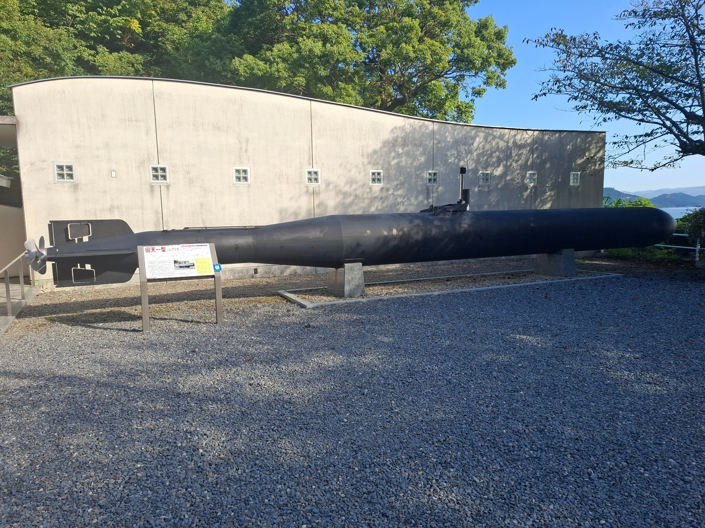
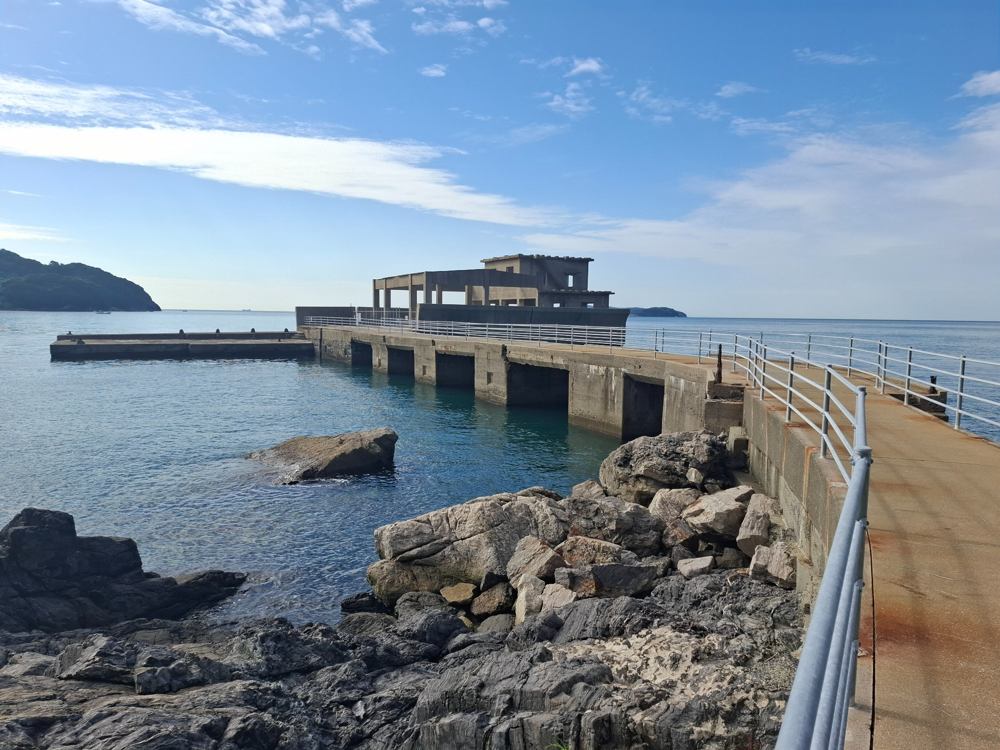
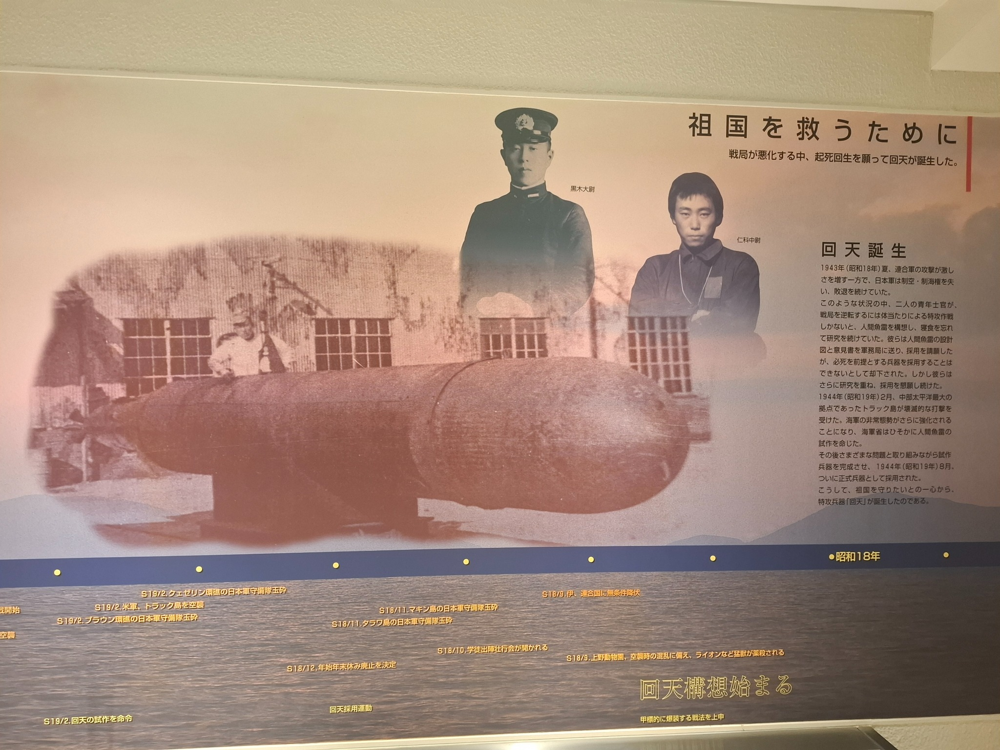
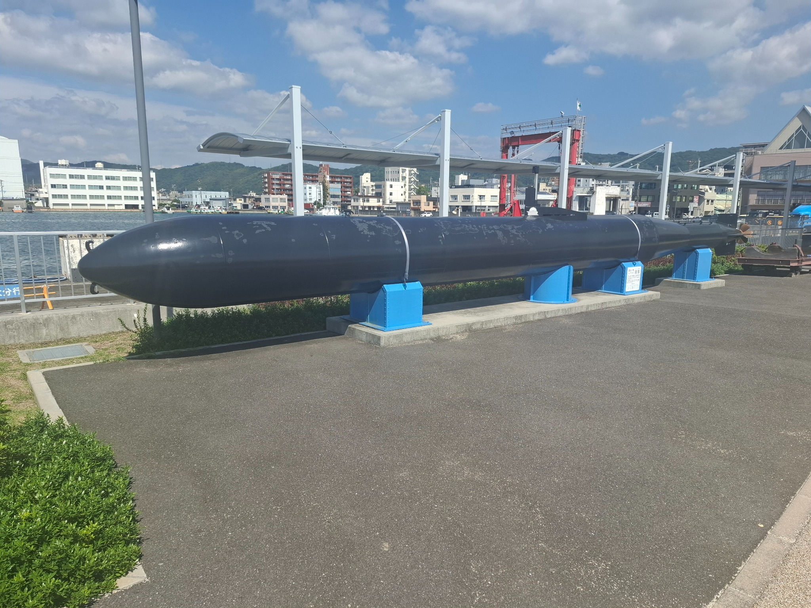

Shunan Kaiten Memorial Museum
| Location | 1960 Ozushima, Shunan-shi, Yamaguchi Prefecture 745-0057, Japan |
|---|---|
| Visited | 1 October 2026 |
| Website | https://www.city.shunan.lg.jp/site/kaiten/ |

Museum Report
Today I visited the Shunan Kaiten Memorial Museum on Ozushima Island – a small island in the Inland Sea just off the coast from Tokuyama. The IJN originally established a testing facility there for Type 93 torpedoes in 1939, however in 1943 it was repurposed to become the first Kaiten training camp. While all the buildings from the camp are long gone, the tunnels and sea platform used is still extant, and in surprisingly good condition.

The Japanese have erected a memorial to the Kaiten pilots, which is a museum dedicated to telling the story of the Kaiten, and the men who volunteered to pilot them. The museum is very well presented, with a lot of information boards, memorabilia, photos, letters home, etc. There is a video playing of interviews they conducted with surviving pilots where they talked about their training, their colleagues who didn’t survive, and their reflections after all these years about what happened. In terms of artefacts, they had a lot of bits and pieces of Kaitens, along with a full-size replica outside the museum, and an interior mock-up of a Kaiten which had been built as a movie prop. All in all, it is a well-done museum, which provides a moving and respectful tribute to the men who died, without any attempt to justify, excuse, or avoid any uncomfortable historical truths. Unfortunately, photography inside the museum was limited, as nothing personal to the pilots was allowed to be photographed. Signage was almost all in Japanese only, however they had QR codes that you could scan to obtain English translations, and English brochures were available.

The local area seems to have adopted the Kaiten as a bit of a theme – when I got back to the mainland, I noticed that there was another full-size Kaiten replica, along with what looked like an original Kaiten rail transporter, near the Tokuyama Port Building, and there were Kaiten images everywhere.

Getting to the Kaiten Memorial / Training Camp is relatively easy – but does require a bit of planning for the ferries. There is a ferry from Tokuyama to the island which goes about 6 times a day and takes 20-50 minutes depending on which boat you get and which route it takes. If you get off the ferry at Umashima, it is a short walk to both the memorial and the training camp. The Tokuyama ferry terminal is a 5-minute walk from the Tokuyama Shinkansen station, which is a 20 minute trip from Hiroshima, or a 45 minute trip from Fukuoka – so a visit is doable as a day-trip from either city.
Entry to the museum costs 310yen (cAUD$2.80), and the return ferry costs another 1140 yen (cAUD$10).